Transformações de Black Myth: Wukong
As Transformações permitem que o Escolhido assuma a forma de criaturas poderosas derrotadas ao longo da jornada. Cada forma fornece vantagens únicas como imunidades, efeitos elementais e ataques especiais.
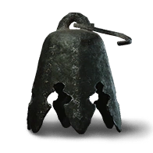
Sino de Vento
Raridade: Comum
Efeito: Aumenta a percepção e o alcance para detectar segredos.
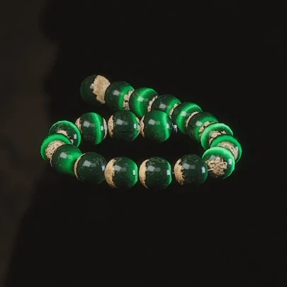
Contas Olho de Gato
Raridade: Comum
Efeito: Pequeno aumento de resistência e percepção.
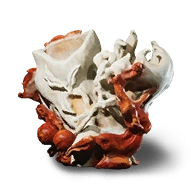
Pote de Ágata
Raridade: Comum
Efeito: Pequeno aumento da defesa física.
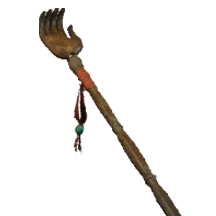
Raspador de Costas
Raridade: Comum
Efeito: Acelera a recuperação de vigor após esquivas.
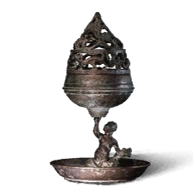
Incensário Boshan
Raridade: Comum
Efeito: Aumenta levemente a resistência espiritual.
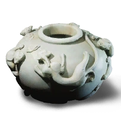
Tigela de Chá de Porcelana Fina
Raridade: Comum
Efeito: Aumenta a cura recebida por itens consumíveis.
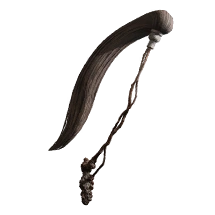
Galho Broto de Geada
Raridade: Comum
Efeito: Concede resistência a gelo e reduz efeitos de lentidão.
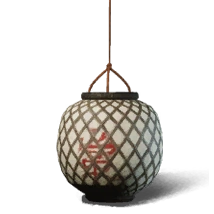
Lanterna Auspiciosa
Raridade: Comum
Efeito: Melhora a visão em ambientes escuros.
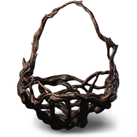
Amuleto do Deus do Rio
Raridade: Incomum
Efeito: Aumenta resistência à água e acelera regeneração de energia.
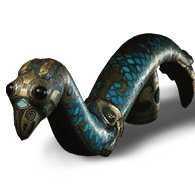
Amuleto Lótus de Pedra
Raridade: Incomum
Efeito: Reduz o dano recebido e amplia resistências gerais.
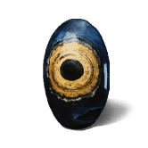
Conta Lótus Vermelhão
Raridade: Incomum
Efeito: Aumenta ataque elemental e chance de aplicar efeitos.
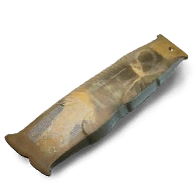
Escama de Carpa Dourada
Raridade: Incomum
Efeito: Aumenta defesa e chance de resistir a golpes críticos.
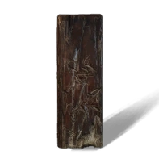
Gravação de Bambu Virtuoso
Raridade: Incomum
Efeito: Reduz recarga de habilidades.
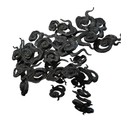
Fragmento da Pilar que Acalma o Oceano
Raridade: Incomum
Efeito: Reduz dano de área e estabiliza efeitos negativos.
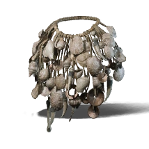
Navegação Mítica
Raridade: Incomum
Efeito: Aumenta recompensas de exploração.
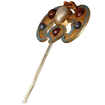
Grampo de Flor Dourada
Raridade: Incomum
Efeito: Aumenta velocidade de ataques.
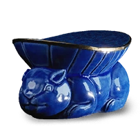
Coelho da Lua de Jade
Raridade: Incomum
Efeito: Melhora evasão e regeneração fora de combate.
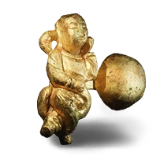
Botão Dourado
Raridade: Incomum
Efeito: Aumenta ganho de moedas e chance de drop.